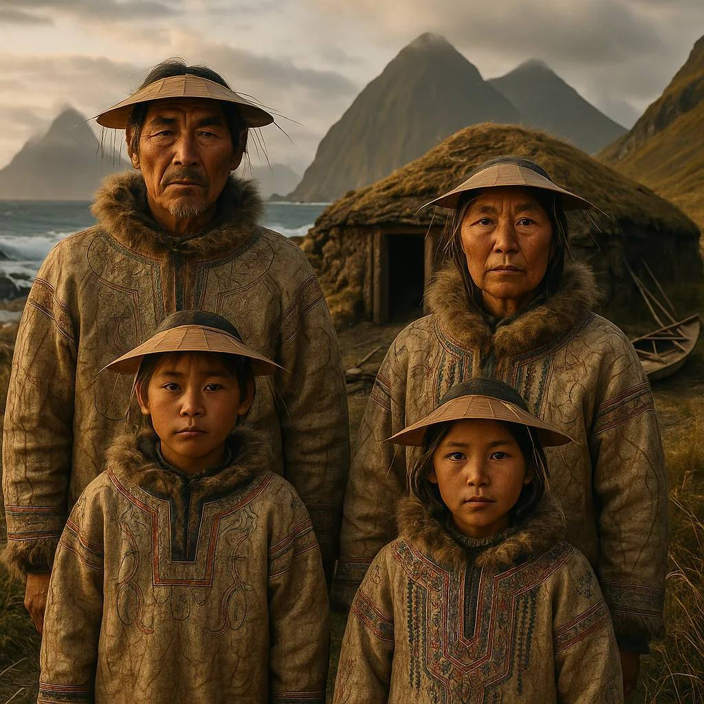
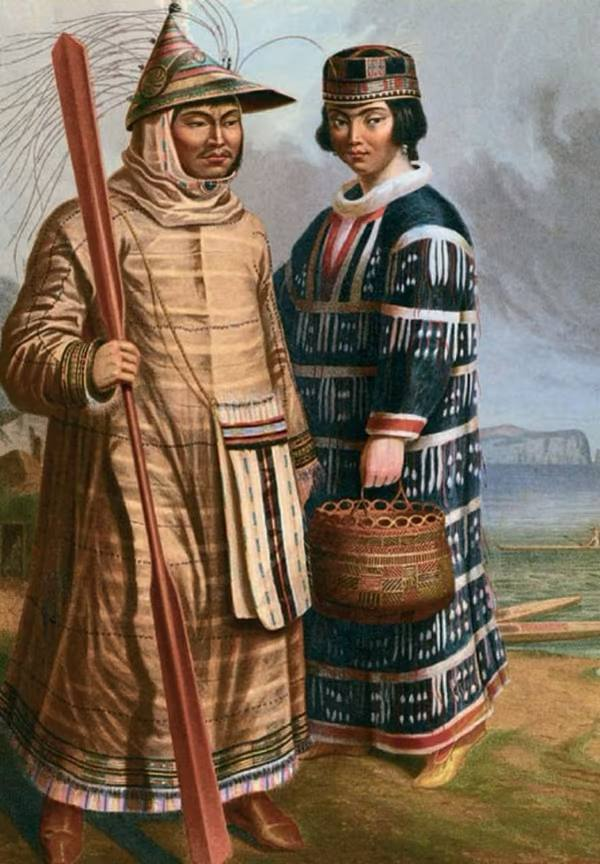

Язык
| Главная | История | Язык | Культура | Традиции | Религия | Об авторе | Источники | |
|
 Семья на Алеутских островах
 Алеуты в традиционной одежде |
Алеутский язык — один из эскимосско-алеутских языков. У него существует несколько диалектов. На территории России также существует алеутско-медновский язык, носители которого используют для него обиходное название «алеутский». Этот смешанный язык представляет собой креолизированную разновидность западных диалектов алеутского языка и сочетает лексику алеутского языка и морфологию русского языка. Письменность: алеутская письменность на основе кириллицы была создана в 1826 году русскими миссионерами И. Е. Вениаминовым и Я. Е. Нецветовым, но, после перехода Алеутских островов во владение США, была утрачена. В России с 1990-х для алеутского языка используется кириллический алфавит (в единственной школе на острове Беринга). |